The Carino DICOM manual
Carino DICOM is a DICOM gateway and a continuity appliance: it receives studies, routes and forwards them, publishes what it holds over Query/Retrieve and DICOMweb, and keeps an imaging department working when the PACS or the RIS stops answering. This manual covers deployment, the everyday jobs and what to do when they fail, the security model, every service, and the software's real limits.
Every screenshot here is a live instance of this software, holding studies that were invented for the picture. No patient appears anywhere in this manual.
Contents
1. What it is and what role it plays
Carino DICOM sits between the equipment that produces images and the systems that store or read them. It is not trying to replace your archive; it is trying to be the piece that connects them, and the piece still standing when one of the others falls over.
It plays two roles, and the distinction matters because it decides which services you enable:
- Permanent gateway. Receives over C-STORE, files to disk by patient/study/series, forwards to one or many destinations according to rules, de-identifies the outgoing copy when asked, and publishes what it holds over Query/Retrieve (for older equipment) and DICOMweb (for modern viewers).
- Safety net. If the primary PACS stops answering, it can bring up its own Modality Worklist so technologists keep scanning, hold what arrives during the outage, and forward it automatically once the primary is back. It also takes HL7 orders over MLLP — or hand-keyed ones — when the RIS is what went down.
Everything is driven by one config.json, and everything runs headless. The web
dashboard is convenient, not required.
Default ports
| Service | Port | Protocol |
|---|---|---|
| Receiver (Storage SCP) | 11112 | DICOM / DIMSE |
| Virtual print | 11113 | DICOM Print |
| Modality Worklist | 11114 | DICOM C-FIND |
| Query/Retrieve | 11115 | DICOM C-FIND/C-MOVE/C-GET |
| Emergency RIS | 2575 | HL7 over MLLP |
| Dashboard + DICOMweb | 8042 | HTTP |
Why 11112 and not 104. DICOM's registered port is 104, which is privileged
on Linux and macOS and needs root. The default avoids that. Configure your equipment accordingly,
or publish 104 onto 11112 at the container or the firewall.
2. Getting started
Pick a deployment shape
| Shape | Fits | Comes back after a power cut |
|---|---|---|
| Desktop app (tray) | A workstation with a person sitting at it: one room, one clinic, a trial. | Only with "start at login" |
| Docker / Podman | A server, or any machine where you want it isolated and movable in one piece. | Yes (restart: unless-stopped) |
| systemd service | The permanent box in the corner of the imaging department, with nobody logged in. | Yes |
Desktop app
Download the package for your OS from the releases page and open it. It tucks into the system tray; clicking it opens the dashboard. It is not code-signed yet, so Windows and macOS warn on first launch — the landing page has the exact steps to open it anyway.
On first run it asks, once, whether it may check GitHub for a newer version. Answering no — or closing the question — leaves it off, which is the default. If it is on, a newer release shows up as a line in the tray menu and beside the version on the Overview panel; clicking either opens the release page in your browser. Nothing is downloaded and nothing installs itself. The tray menu's Check for updates tick turns it on or off whenever you like, and only this desktop build has it at all — the container and systemd deployments do not.
Docker
git clone https://github.com/MiguelCarino/Carino-DICOM
cd Carino-DICOM
mkdir -p data
echo "PACS_UID=$(id -u)" >> .env
echo "PACS_GID=$(id -g)" >> .env
docker compose up -d --build
docker compose logs -f pacsThe first boot generates and prints an access token into the log. Open
http://127.0.0.1:8042/ and paste it when the dashboard asks. Everything — config,
studies, logs, index — lives in ./data, which is what you back up.
The most common first-run failure is ./data owned by root: the container
never runs as root and dies with EACCES. The two echo lines above
prevent it by building the image for your own account; if you skipped them, add them and run
docker compose up -d --build again. On
SELinux hosts (Fedora, RHEL, Rocky) the volume's :z suffix is not decoration:
without it the bind mount is unwritable while the ownership looks perfectly correct.
systemd service (Linux)
git clone https://github.com/MiguelCarino/Carino-DICOM.git
cd Carino-DICOM
sudo packaging/systemd/install.shThe installer creates the carino-pacs system user, copies the code to
/opt/carino-pacs, provisions /var/lib/carino-pacs, and installs the
unit… and does not start it. That is not an oversight: starting a PACS opens
listeners that accept patient data, and that decision belongs after reading the config, not before.
Edit /var/lib/carino-pacs/config.json, then:
sudo systemctl enable --now carino-pacs
systemctl status carino-pacs
journalctl -u carino-pacs -fRe-running the installer upgrades the code in place and never touches an existing
config.json.
Where the data lives
| Shape | Directory |
|---|---|
| Desktop / CLI | ~/CarinoDICOM/ (existing installs keep ~/CarinoPACS) |
| Docker | /data in the container → ./data on the host |
| systemd | /var/lib/carino-pacs/ (mode 0750) |
config.json lives with the data, not in /etc, because relative
paths in the config ("./received", "./logs", "./index.db")
resolve against the directory the config file itself sits in. A config in /etc would
scatter patient studies through /etc.
First run, in order
- Choose the services. Everything ships off. The dashboard's setup chooser asks what this machine should run; enable only that.
- Add your destinations (name, host, port, AE title) on the Destinations tab of Configuration, which is the tab that row opens on.
- Prove connectivity before moving a single image: press Echo on the
destination's row. On a machine with no dashboard,
./run.sh echo --name "Hospital PACS"does the same. If the echo fails, the problem is not Carino — it is the network, the firewall or the AE title. - Point one device at it using the Point the modality at line on the receiver's card, and send a test study (see How do I…).
- Watch the activity log, on the Logs tab of Activity. If something fails it shows up there, and on the service's card as Last problem; this software would rather shout than fail quietly.
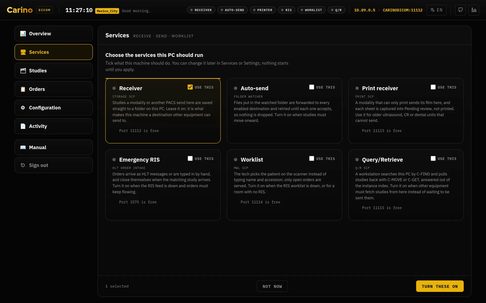
Headless
./run.sh init # scaffold config.json and its folders
./run.sh init --token # and generate web.auth_token
./run.sh serve # dashboard at http://127.0.0.1:8042
./run.sh receive # receiver only
./run.sh send # folder watch / forwarding only
./run.sh qr # Query/Retrieve only
./run.sh mwl # worklist only
./run.sh ris # HL7 order listener only
./run.sh print # virtual printer only
./run.sh echo --host 10.0.0.5 --port 104 --aet REMOTEPACSEvery command takes -c / --config <path>. On Windows, run.ps1.
3. How do I…
Short recipes for the jobs that come up on the floor. Each one ends with how you know it worked; if it did not, the next chapter is the list of what to check.
…point a modality at it to store images
- Open Services. If the Receiver card says it is stopped, press Start.
- Read the card's line Point the modality at: an AE title, an IP address and a port
(by default
CARINODICOMand11112). The copy button beside it copies all three. If the machine has more than one address, use the one on the modality's network. - On the modality, add a storage destination — vendors call it a DICOM node, an archive, a "Send to" or a "Store" target — with those three values. The modality's own AE title is the calling AE; you do not have to enter it here.
- If Configuration → Settings → This PACS lists AE titles under Accept only these AEs, add the modality's AE title there, or the receiver refuses it.
- Run the modality's own connection test (often Verify or Echo), then send one study. It appears in Studies → History.
The card's Test button checks the receiver from this machine itself. If Test passes and the modality still fails, the problem is between the two: address, port, firewall or the AE allow-list.
…point a modality at it to print
For equipment whose only output is film. Carino pretends to be the film printer and captures each sheet for you to identify; nothing is printed on paper.
- Open Services and press Start on the Print receiver card.
- Read its line Point the modality at (by default
CARINOPRINT, this machine's IP and port11113). - On the modality, add a DICOM printer — sometimes called a laser imager or film printer — with those three values. Grayscale is always offered; if the modality only prints in colour, tick Also accept color print jobs under Configuration → Settings → Printing.
- Press Send a test print on the card. A sheet marked TEST PRINT — safe to discard appears in Studies → Pending within a few seconds. That proves the receiver works; discard the sheet.
- Print one film from the modality. The card shows Last print with the number of films, the modality's AE title and its address, the Captured counter goes up, and the film waits in Pending for you to approve (see below).
Store each captured film as (under Printing) decides what the film becomes when you approve it. Many archives and viewers store a PDF but do not display it; choose Image (Secondary Capture) if the film has to be read on the other side.
The printer AE title typed on the modality is not checked: a mistyped one still prints. Only the modality's own AE title is filtered, and only if you fill in Accept only these AEs. If a print fails, the card shows Last problem; the print troubleshooting table lists every message and its fix.
…point a modality at it to pull its worklist
- Make sure there are orders. Either the RIS sends HL7 orders to the Emergency RIS
service (port
2575), or someone types them in Orders → New order. - Under Configuration → Modalities, register the room with its exact station AE title. An order's target is then picked from that list instead of typed.
- Open Services, press Start on the Worklist card and read its line
Point the modality at (by default
CARINOMWLand port11114). - On the modality, set the worklist provider (MWL, "HIS/RIS" or "worklist server") to those values and query it.
An order with no target appears on every station; an order with a target appears only on the station whose AE title matches it exactly. When the study comes back it is matched to its order by accession number and the order closes itself.
…approve a pending film
Captured films, and PDFs or images found beside a study, wait in Studies → Pending. The 📎 count next to Studies says how many.
- Open Preview and look at the sheet.
- If the patient has an open order, press Match to order… and pick it. Name, patient ID, accession and study come from the order, and the order is closed as captured.
- Otherwise type the identity yourself. Patient ID and Patient name are required; accession, date and description are strongly recommended.
- If the item arrived beside a study and you changed the patient, choose what it belongs to: Attach to the original study only if that study really is this patient's, otherwise New study. A wrong choice files one patient's sheet inside another patient's study.
- Press Approve & send. It is converted to DICOM and forwarded like any other study.
There is no undo: once approved, the original file is gone from Pending and the DICOM copy is on its way. A mistake is fixed on the archive. Discard removes an item without sending it.
…fix a stuck forward
Open Studies → Stuck (the ⚠ count next to Studies). Rows are grouped by study, with the patient, accession and description, and sorted into three kinds:
- Retrying automatically — a destination refused or did not answer. Read the error on the row: it says whether the remote rejected us (and why, for example "add CARINOSCU to the remote's allowed AE titles"), dropped the connection, or never answered. Fix that, press Echo on the destination's row under Configuration → Destinations, then Retry now.
- Held — nothing is being sent — a de-identification hold. No timer releases it; use the two buttons on the row, and see De-identify on forward.
- No destination left to retry — the files are routed to a destination that was removed or turned off. Turn it back on, or press Send to… and pick another destination, or Remove from queue (it asks first) to accept the loss.
…find out why something failed
- Look at the service's card. Every listener shows Last problem when something went wrong; click it to open the log already filtered to that service.
- On Activity → Logs, use the service chips (store, send, print, worklist, Q/R, RIS…), Errors and warnings only, and the text filter — an AE title, an IP address or an accession number narrows it fast.
- To hand the problem to someone else, copy the visible lines, or download a whole day's log.
- Press Test on the card. If the test passes from this machine but the modality still fails, look at the network between them.
- If a setting changed and nobody knows who changed it, Activity → Audit names the person and the sections they changed.
4. When something goes wrong
Symptom first, then where to look, then the fix. Almost every row starts in the same two places: the service's card on Services (its Last problem) and Activity → Logs.
Sending, receiving and the worklist
| Symptom | Where to look | Fix |
|---|---|---|
| The modality cannot send to us at all | Receiver card; log lines starting
Receiver: refused | its AE title is not in the allowed list:
add the modality's AE under Accept only these AEs, or clear the list. Nothing in the
log: the connection never arrived — check the IP and port on the modality, the firewall, and
that the card is running. Test on the card separates "this machine" from "the
network". |
| The modality sent, but the study is not in History | Log, store chip; Overview Free space | Refused C-STORE — low disk space: free disk
space or lower scp.min_free_gb. The modality can resend once there is room. |
| A card is amber: "Enabled but not running" | Log at the time it started | Its port is taken by another program, or by another service here. Change the port or stop the other program, then Start. |
| Studies do not reach the main PACS | Studies → Stuck | The
row's error says what the PACS did: rejected permanently: calling AE title not
recognised → add our sending AE (default CARINOSCU) on the PACS;
connection refused → wrong port or the PACS is stopped; no reply →
host off or a firewall; aborted → often a TLS mismatch. |
| Nothing is sent to one destination, and nothing retries | Stuck, "Held" section | A de-identification hold — see De-identify on forward. |
| The modality does not see its worklist | Worklist card; log, worklist chip | MWL: refused: add its AE to the worklist's allow-list. No query in the
log: wrong IP/port/AE on the modality. Query arrives but the list is empty: the order's target
AE does not match the station exactly — fix it under Modalities. |
| The hospital's own RIS does not give the modality its list | Configuration → Modalities → Test worklist | See Worklist probe; the answers land on Activity → Worklist probes. |
| HL7 orders from the RIS do not appear | Emergency RIS card; log, RIS chip | Check the RIS is sending to this IP on port 2575, and that its address
is in ris.allowed_hosts if that list is set. |
| Everyone was signed out | — | Normal after a restart: sessions live in memory by design. Sign in again. |
| The dashboard stops responding or its numbers stop changing | Reload the page | If
it does not come back, the engine is not answering: check that the service or container is running
(systemctl status carino-pacs, docker compose ps) and read its log. |
The container dies with EACCES | docker compose logs pacs | ./data
is not writable by the container's user: set PACS_UID/PACS_GID in
.env and rebuild (see Docker above). |
| Failover e-mail is on, but nobody got one | Configuration → People | Mail goes to profiles with an e-mail address, not to a list. See Notifications. |
Printing
Every refusal and failure of the print receiver is a line in the log (the print chip), counts in the card's Errors, and shows as its Last problem. A successful job shows as Last print.
| Log line or symptom | What it means | Fix |
|---|---|---|
Print: refused X @ ip — its AE title is not in the allowed list (…) | The modality's AE title is not on the print receiver's list. | Add it under Printing → Accept only these AEs, or clear the list. |
Print: refused X @ ip — too many connections at once | The modality, or several, opened more connections than the receiver accepts at once. | Let the jobs finish and print again; if it repeats, print one job at a time. |
Print: X @ ip asked for Basic Color Print Management…, which this printer does not
offer | The modality wants colour and colour is off. | Tick Also accept color print jobs. Not counted as an error: a modality that offers both prints in grayscale. |
Print from X: nothing to print — no film was created first, … N film(s)
were created but no image was sent into them, … the film it named (…) was never
created here | The modality skipped a step of the print sequence. It was told "empty page" (a warning, 0xB603). | A modality-side setting or fault: check its printer configuration (film format, number of images) and print again. |
Print: X sent an image for a box this printer never handed out (…); refused | The modality referred to an image box from another session. | Restart the print from the modality; if it repeats, report it with the log line. |
Print: could not read image N from X (…); it is left blank on the film | One image used a pixel format the receiver does not read; the rest of the sheet was kept. | Change the modality's print settings (bit depth, colour) if it offers that; report the line otherwise. |
Failed to render or queue the print job from X: … | The film arrived but could not be written (status 0x0110). | Check free disk space and that the pending folder
(scu.pending_dir) is writable. |
Other lines starting Print: … | Passed through from the DICOM library's own messages for that print connection. | Read with the line before it; report if unclear. |
| Nothing in the log at all | The connection never arrived. | Is the card running
(not amber)? Is the modality using this machine's IP and port 11113? Is a firewall
in the way? Send a test print on the card proves this side. |
Two things that are not the cause: the printer AE title typed on the modality (it is not checked), and the modality leaving the film session and film box numbers to the printer (they are created here when missing). A Presentation LUT is accepted and ignored, and a modality that first asks for the printer's configuration gets an answer.
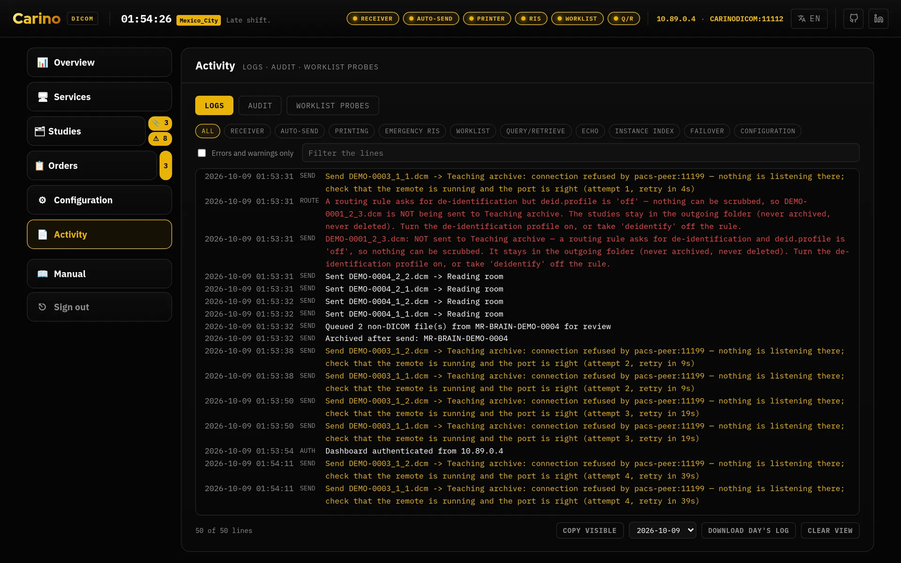
5. The security model and the token rule
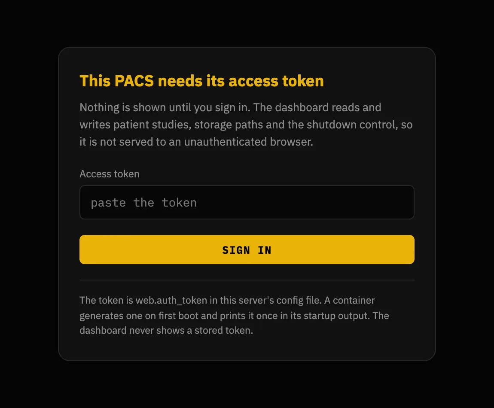
Start with the part that matters: the dashboard is the key to the archive. Anyone who opens it can read every stored study, download the DICOM files, change every setting, start and stop services, delete studies and shut the server down. Out of the box there is one shared secret and whoever holds it can do everything — profiles are optional and off until you turn them on. Once you do, each person signs in as themselves with their own permissions, their own view of patient identifiers, and their own name in the audit trail; the shared token keeps working as an administrator so nothing that already uses it breaks.

*** wherever it would have appeared.Permissions also decide what the dashboard draws. A profile sees only the sidebar rows, and only
the tabs inside them, that its capabilities pay for: a Radiologist who holds
routing.read but not config.read gets Configuration with
Destinations and Routing and no Settings tab, and Reception, holding
none of the three, has no Configuration row at all. The service chips in the top
header are the deliberate exception — see Web dashboard below.
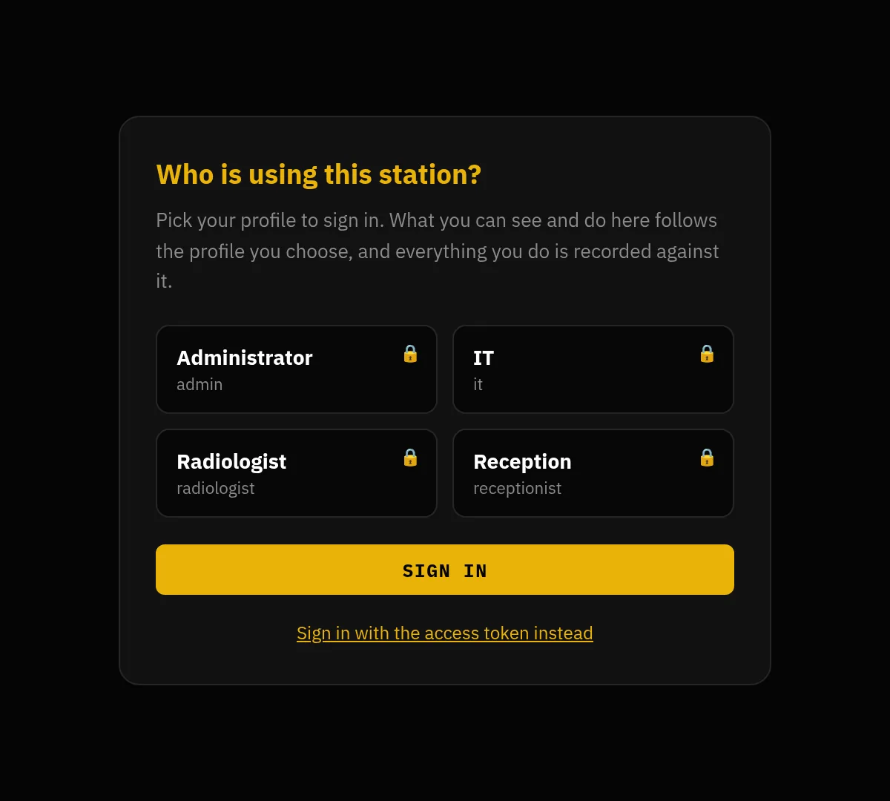
users.list_profiles is on — publishing the staff list to anyone who can reach the port is a real disclosure, and it is your call. The token still works, folded away underneath, because it is the way back in when somebody locks themselves out.The rule
An empty web.auth_token is allowed only while web.host is
loopback. If web.host is anything else — 0.0.0.0, a LAN address, a
hostname — and the token is empty, the server refuses to start. That refusal is
a feature, not an error to route around.
The reason is concrete. Unauthenticated on 127.0.0.1, the operating system is the
access control: only a process on this machine can reach the API. That is defensible. But
web.host is operator-configurable, and the moment somebody changes it to
0.0.0.0 so they can "get in from the other PC" — in a hurry, on a Tuesday, not
thinking about security — that same API hands any LAN neighbour the study list, the storage paths,
the DICOM bytes and /api/shutdown. The rule exists because that change takes ten
seconds and its consequences last years.
Every container is always in that situation: a container publishes on
0.0.0.0 by construction. So the image generates a 256-bit token on first boot when you
do not supply one — and prints it. What it never does is generate one quietly: a secret
nobody sees is a secret nobody rotates.
Generating and presenting the token
./run.sh init --token # writes it into config.json
python3 -c "import secrets; print(secrets.token_urlsafe(32))"
openssl rand -base64 32The server accepts the credential three ways:
Authorization: Bearer <token>X-Carino-Token: <token>- a session cookie issued by
POST /api/login
The cookie exists so the dashboard asks for the token once instead of holding it in JavaScript, where every XSS and every browser extension can read it. It never carries the token: it carries an HMAC over a secret generated at startup and kept in memory only. That is why a restart logs everyone out — the right trade for a single-operator appliance: no session store on disk, nothing to leak, and at worst the token is retyped once a shift.
The dashboard speaks plain HTTP. There is no built-in TLS for the web layer. If you expose it beyond loopback, put it behind a reverse proxy that terminates HTTPS. A token sent over cleartext HTTP on a shared network is a token you have given away.
The DICOM side
allowed_aets— an allow-list of calling AE titles. Empty means "accept anyone". It is a useful filter, not authentication: DICOM does not authenticate the caller.- DICOM-TLS — available on both sides, independently, including mutual TLS with
a client certificate. It uses the same port: a plaintext peer cannot talk to a TLS
receiver, and vice versa. TLS encrypts and authenticates the transport, not the
application — combine it with
allowed_aetsor client certificates for real access control. - Firewall — the DICOM listeners bind
0.0.0.0by default (though every listener is off until you enable it). That is right for something modalities must reach, and it means restricting them to the modality subnet is your job.
What the model does not protect
- Profiles are off until you turn them on. Until then there is one shared secret for the whole appliance and no accounts, no roles and no permissions. That is still the default, because switching it on silently during an upgrade would break every machine client on the site.
- No directory integration. Accounts live on the appliance. There is no LDAP, no Active Directory, no single sign-on, and no way to disable somebody centrally when they leave.
- The audit trail can be truncated. It catches a record edited in place, one removed from the middle, records reordered, and a file cut mid-line — each breaks a digest and Check integrity names the record and the reason. It cannot catch the last few records being deleted, because what remains is a genuinely valid chain, and it cannot stop a wholesale rewrite by somebody with write access to the audit folder. If you need non-repudiation, copy the chain head somewhere this machine cannot write and compare it later.
- No encryption at rest. Studies are ordinary DICOM files, the sqlite index
holds names and identifiers in the clear, orders are JSON, and
config.jsonholds the token in plaintext. Encrypt the volume underneath (LUKS, BitLocker, FileVault) and restrict the data directory's permissions. - The HL7/MLLP listener has no TLS and no credential. It is a TCP socket with
MLLP framing. Its only control is
allowed_hosts, a peer-address check and therefore spoofable. Anyone who can open a connection to that port can inject orders that appear on the worklist. Bind it to a trusted clinical segment and firewall it. - De-identification does not touch pixels. See that service below: burned-in demographics survive every profile.
Backups. The sqlite index is a cache and rebuilds itself; the images do not. Back up the storage directories — and test a restore at least once.
No telemetry, with one exception you switch on yourself. The engine sends nothing anywhere: no analytics, no crash reporting, no usage counters, no third-party scripts fetched at runtime. Its only outbound connections are the DICOM associations and HL7 acknowledgements you configured, to the peers you named — and a Docker, Podman or systemd deployment is that and nothing more, which is the sentence that matters, because that is the shape sitting in the imaging department with the patient data on it. The desktop app can additionally check whether a newer version has been published, and only if you said yes to the question it asks once on first run; it is off by default and the tray menu turns it off again. That check is one HTTPS request a day to GitHub's list of releases, carrying a User-Agent that names the app and nothing else — no identifier, no counter, no configuration, no patient data — so what GitHub learns is this machine's IP address and roughly when the app was started, and that is the whole of it. Nothing is downloaded and nothing installs itself. A change that sent more than that, or that sent anything nobody had agreed to, would be treated as a vulnerability.
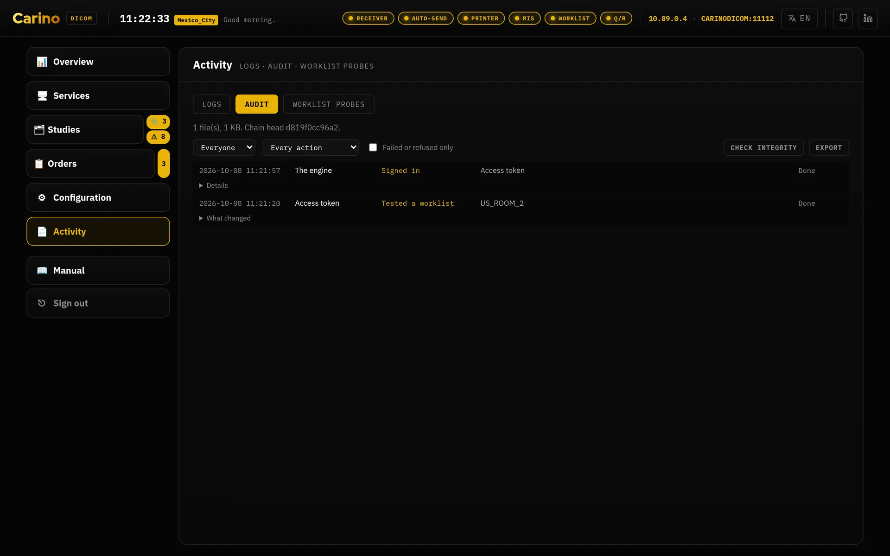
6. The services, one by one
Everything that opens a port ships off. The right question is not "what can it do?" but "what does this machine need to do?" Every enabled service is one more open port. The index below is the one exception — it starts on its own, because it is a local sqlite cache that binds nothing.
Each service has one switch. Start on its card starts it and keeps it on after a restart; Stop asks first, then stops it and keeps it off. In Configuration → Settings the same switch is the box Run this service (also at startup), so the card and the setting can never disagree. Saving settings restarts only the services whose own settings changed, and the dashboard says which.
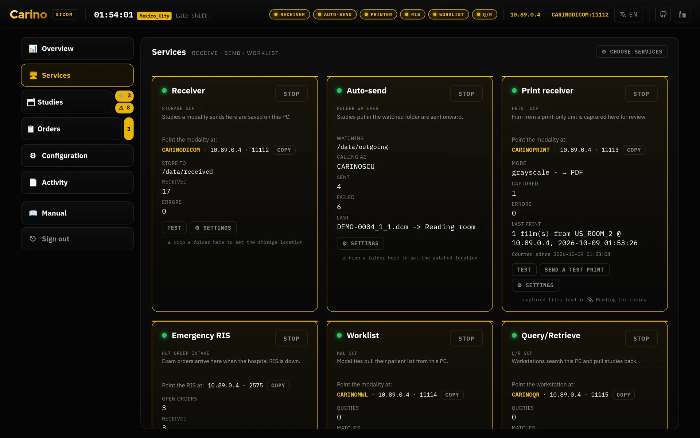
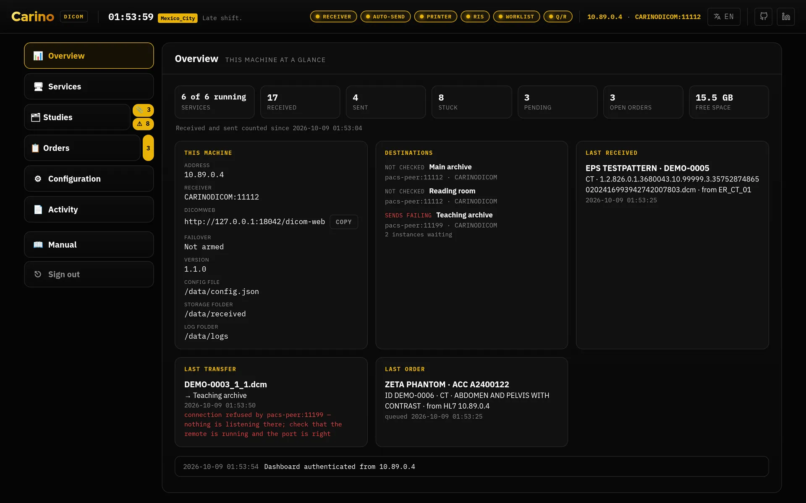
Receiver — Storage SCP
Port 11112 · C-STORE, C-ECHO
- What it does
- Accepts studies pushed by modalities and files them to disk, optionally organised by Patient / Study / Series. It accepts all transfer syntaxes and stores compressed objects as-is — no transcoding, so nothing is altered on the way in.
- Turn it on when
- Anything needs to send images here: modalities, another PACS, a workstation. This is the central service.
- Leave it off when
- This machine only forwards what something else drops in a folder.
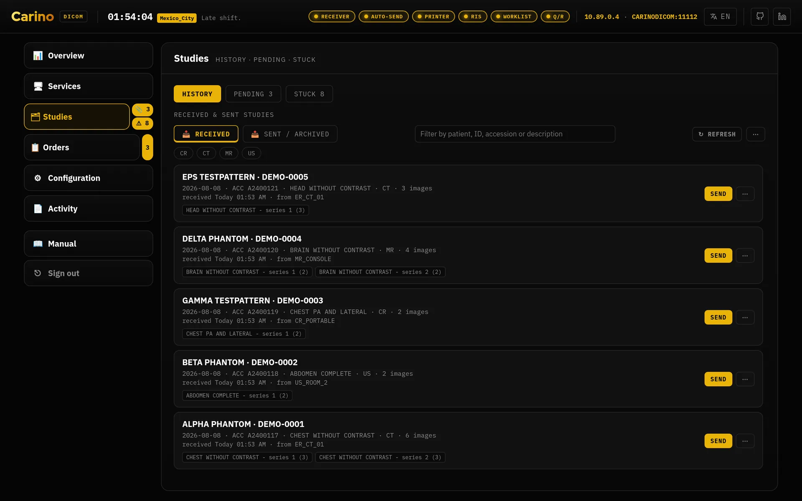
Auto-send — Storage SCU and routing rules
Outbound client · C-STORE
- What it does
- Watches a folder and forwards every new file to whichever destinations apply. A file is only sent once it is stable (size unchanged between two scans), so a half-written file is never forwarded. Progress is tracked per destination: a file counts as done only when every enabled destination has accepted it, and failed hosts are retried on the next scan. On success the original can be kept, moved or deleted.
- Rules
- With routing enabled, a rule picks destinations by modality, calling AE title, station,
patient ID or study description (case-insensitive
*and?globs). Example: CT fromER_*to the teaching archive, de-identified. - The guarantee
- A study can never end up going nowhere. Routing off, no rule matched, an unreadable header, a rule naming a destination that no longer exists — every one of those falls back to every enabled destination. Over-sending annoys an operator; under-sending loses an image.
- The one exception
- A rule that asks to de-identify for a destination, where the scrub cannot actually be
performed, holds that destination: it is not sent to at all, rather than
sent identified. Two things stop the scrub — the profile is
off, or the profile is on and no de-identifier can be built from the settings — and they need different fixes. Nothing is lost either way; see De-identify on forward below. - Turn it on when
- This machine has to deliver images onward: to the central PACS, to a reading workstation, or as copies to a teaching archive.
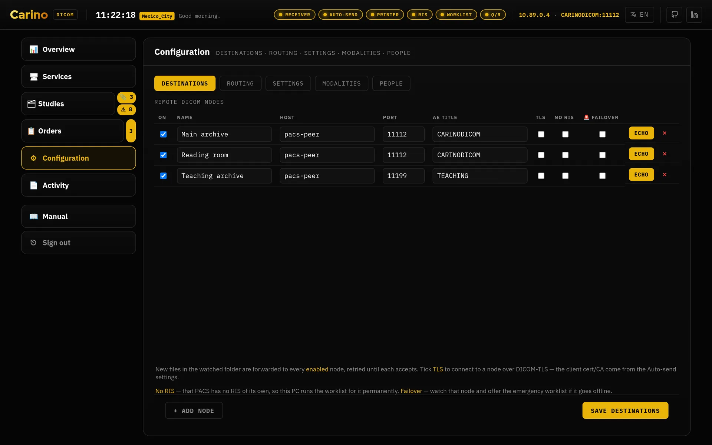
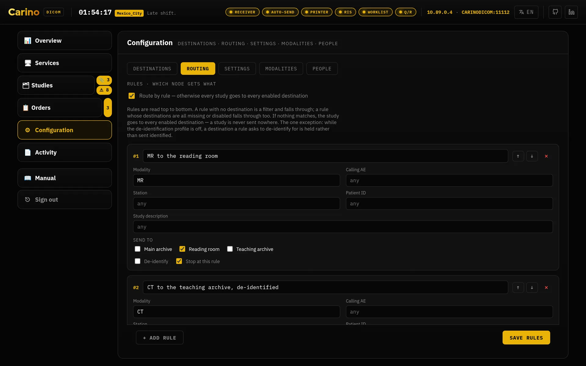
![The Stuck tab of Studies, under a banner reading “8 files need attention” and split in two: “Retrying automatically”, listing the teaching archive with two instances of the CR study waiting, its last error in red, a Retry now button and a countdown to the next attempt; and “Held — nothing is being sent”, listing the teaching archive tagged profile off, with six instances of the CT study waiting under its patient and accession number, the edit that releases them, the buttons De-identification settings and The rule that asks for it, and Send to… and Remove from queue.](img/en/stuck.webp)
De-identify on forward
PS3.15 Annex E profile · applied only to the copy that leaves
- What it does
- Applies the Basic Application Level Confidentiality Profile to the object being
sent, declaring in
(0012,0064)exactly which retain options were used so the recipient can see what was kept. The archived original is never rewritten — that asymmetry is the whole idea. - Profiles
basicretains dates (full or shifted), patient characteristics, device identity and institution identity.strictdrops device and institution identity and removes private attributes even if you asked to keep them.- Turn it on when
- Images leave the clinical environment: teaching, research, a vendor, an outside second opinion.
- Turning it off
- The profile decides whether scrubbing happens at all; a rule's de-identify tick
decides which destinations get a scrubbed copy. Set the profile to
offwhile a rule still asks for it and Carino holds that destination rather than sending an identified copy to a node whose owner was told it receives none.
Held, not sent — and this is the answer when studies stop moving. A destination a rule marks de-identify receives nothing whenever the scrub cannot actually be performed. Delivery is deferred, identity is not disclosed: a study waiting on disk is released by an edit, a name that has arrived at an outside node is not recoverable by any edit.
There are two reasons the scrub cannot happen, and they are not fixed the same way. Every hold records which one it is, and the Stuck tab of Studies prints the remedy for the cause it recorded rather than guessing:
- The profile is
offwhile a rule still asks for a scrub. Set the profile tobasicorstrictand the next auto-send pass releases them. - The profile is on, but no de-identifier could be built from the current settings, so there is still nothing to scrub with. The failure that stopped it is on the Logs tab of Activity, on the send channel — fix that. Turning the profile off does not release this one: it releases nothing and only moves which half is stopping the scrub.
Unticking de-identify on the rule releases either hold, and it releases the studies identified — which is the exact outcome the hold exists to prevent. Make that edit only if that destination is genuinely no longer meant to receive scrubbed data.
Whichever of these edits is the right one, it is a click from the row that reports the hold. Each held row carries a De-identification settings button that opens the Settings tab of Configuration, and a The rule that asks for it button that opens the Routing tab. Both open the tab and nothing more: neither scrolls down to the rule that asks for the scrub, and neither highlights it. Even so, the row that names the problem is the way to both places it is fixed, so this repair is shorter than it was when each of them was a sidebar row to find.
Nothing is lost and nothing is quiet about it. The studies stay in the outgoing folder — never archived, never deleted — every other destination on the same study still receives them, the Logs tab of Activity raises an error naming the study, the withheld destination and the cause, the de-identification fieldset on the Settings tab names it too, and the ⚠ badge beside Studies counts those files — and that badge is itself a button, which opens the Stuck tab. Nothing releases a hold on its own: no timer runs it down and nothing retries it.
It does not clean pixels. Patient demographics burned into the image — the banner an ultrasound or a secondary capture prints inside the frame — survive every profile, and they are the most common way "anonymised" data walks out of a hospital with a name on it. The Clean Pixel Data option (113101) is deliberately not claimed, because it is not done. Nothing inside the program can detect that leak for you: a human has to look at the images. Narrative text inside Structured Reports is likewise not read.
Index
sqlite · index.db
- What it does
- Keeps one row per stored file and derives patient, study and series answers from it, so a study summary can never drift out of step with the instances it summarises. It is the query layer behind Query/Retrieve and DICOMweb.
- Turn it on when
- You use Query/Retrieve or DICOMweb. It is the only dependency of both.
- What it guarantees
- The index is a cache, never the source of truth. Losing it costs a rescan, never an image.
Query/Retrieve — C-FIND, C-MOVE, C-GET
Port 11115 · Patient Root and Study Root
- What it does
- Lets another system ask "what studies do you have for this patient?" and then "send them to me / to that workstation". This is the half of a PACS that old equipment can actually talk to: a 2009 ultrasound or a CR reader will never speak DICOMweb, but it does speak DIMSE.
- Turn it on when
- Workstations or modalities need to pull studies from here, or you are acting as the temporary archive during a primary-PACS outage.
- What it guarantees
- A C-MOVE never invents its instance list — it resolves through the index. Anything the index knows about but cannot be read off disk is counted as a failed sub-operation and named in the Failed SOP Instance UID List. It is never quietly dropped: a C-MOVE that reports success while sending fewer images than it matched is the worst failure this software can have.
DICOMweb — QIDO-RS, WADO-RS, STOW-RS
HTTP, under /dicom-web on the dashboard port
- What it does
- Lets modern viewers (OHIF, Weasis and friends) query, retrieve and store over HTTP without negotiating a DICOM association. A STOW-RS upload goes through the same filing a C-STORE uses, so a study posted by a viewer is indistinguishable from one pushed by a modality.
- Turn it on when
- You want a web viewer against the archive. Remember the token protects these routes too.
- CORS
cors_originsis matched exactly (scheme + host + port) and is empty by default, so nothing is reflected back to an origin that is not on the list. There is no pattern syntax — but a literal*is honoured, and only because you typed it: from then on every origin is reflected and any page the operator visits could read the archive off this machine. Name the viewer instead.- What it does not do
/rendered,/thumbnail, bulkdata URIs and transcoding between transfer syntaxes are not implemented and answer406. A half-working viewer is worse than an absent feature: anything that cannot be produced is never faked.
Modality Worklist (MWL)
Port 11114 · worklist C-FIND
- What it does
- Serves orders to modalities so the technologist does not hand-key patient details. Each order carries a pre-generated Study Instance UID that is burned into the exam, so the study the modality sends back reconciles to its order exactly. An order's target modality AE steers it to one station; blank means every station sees it.
- Turn it on when
- The RIS is not reaching the modalities: because it is down, because the destination simply has no RIS, or to test a RIS→PACS flow without a live RIS.
Registered modalities
No port · Configuration → Modalities
- What it does
- The list of rooms this appliance serves — a name a person recognises, the station AE title the worklist matches exactly, the modality code, and an optional station name. It is not a permission list: a scanner does not have to be registered here to send images, and being here does not let it. What it buys is that an order's target becomes a pick from a list rather than a field somebody types, and it is the list the worklist probe below borrows an AE title from.
- Fill it in when
- You are serving the worklist or hand-keying orders. Until one station is registered, an order's target is typed by hand and a typo cannot be caught.
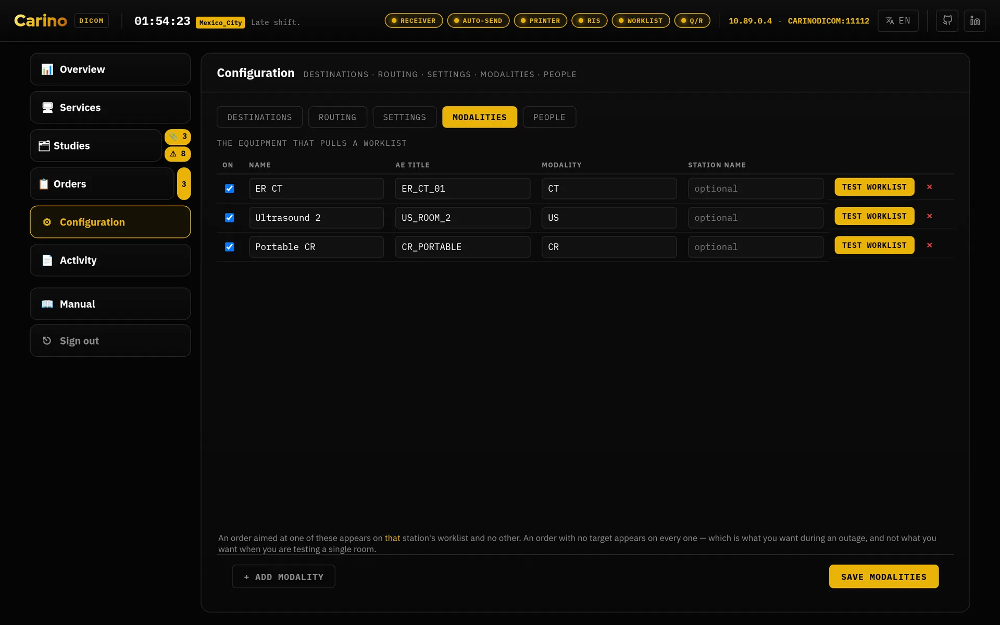
Worklist probe — asking the other RIS
Outbound client · worklist C-FIND · Configuration → Modalities
- What it does
- Answers “why is this scanner not seeing its list?” without touching the scanner. Give the hospital's real RIS or its broker an address under Settings, then press Test worklist on a modality's row: Carino asks that RIS the question that modality would ask, using that modality's own AE title, and files every answer under Activity → Worklist probes. One run asks the same question five times, widened a key at a time — station and date and modality, then without the modality, without the date, without the station — because the difference between the answers is what locates the fault. Nothing comes back to any of them and the other RIS has nothing scheduled; only the narrowest comes back empty and it is the station AE title that is wrong.
- Before you press it
- Take the modality off the network first. The probe calls as that modality, and two things answering to one AE title on one RIS is a confusion somebody then has to go and undo.
- What it is not
- Not a service, not a schedule and not a queue. What Worklist probes holds is a record of what somebody else answered: those orders are never served on this appliance's own worklist, and it claims none of them. Clear empties that record and does nothing else.
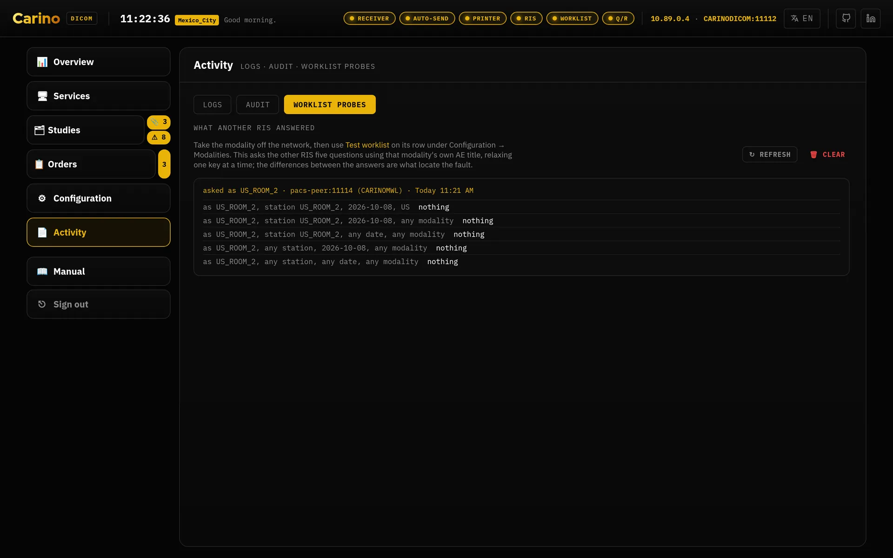
Emergency RIS — HL7 orders
Port 2575 · HL7 ORM^O01 over MLLP
- What it does
- Receives HL7 orders over MLLP, and also lets you hand-key them into the dashboard when nothing upstream is alive. When the study comes back by C-STORE it is matched to its order by accession number (patient ID as a fallback), and the order is closed and archived for the trail — never erased.
- Turn it on when
- The RIS is down, or you are testing an integration.
- What it guarantees
- Image delivery is never gated on an order match. A study with no matching order is still stored and forwarded; the order simply stays open for manual reconciliation.
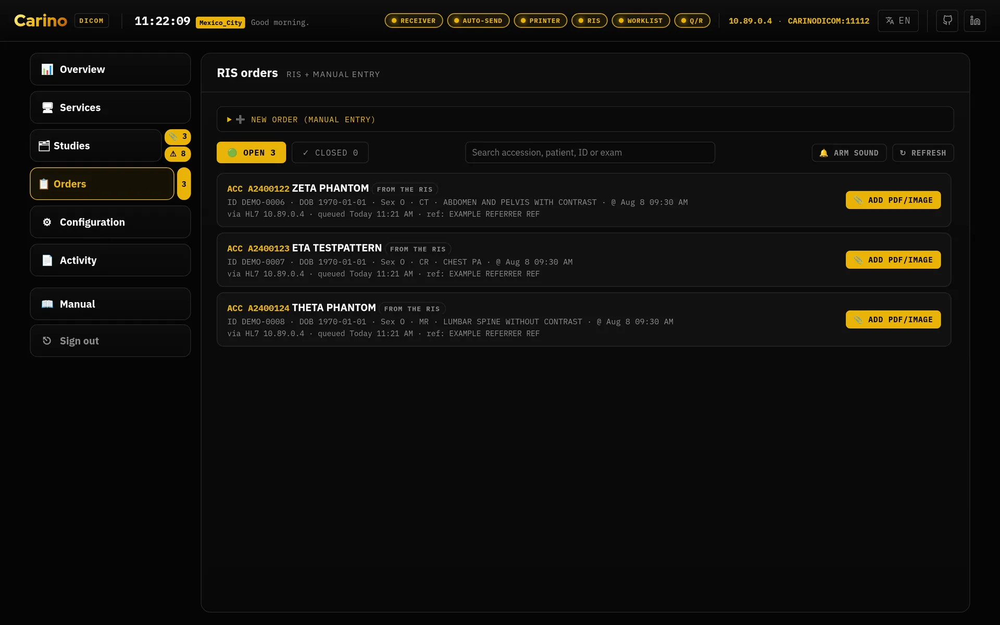
No TLS, no credential. See the security section: anyone who can open a socket to that port can inject orders. Trusted clinical network and a firewall, or not at all.
Emergency failover
C-ECHO monitoring of the destination marked primary
- What it does
- Mark a destination as primary and arm the monitor: Carino C-ECHOes it periodically and watches forward failures. If it stays unreachable past the threshold you get the prompt to activate the emergency RIS. Activating starts the local worklist so technologists keep scanning, holds every study received during the outage, and forwards it once the primary is back. You decide when to stand down.
- Turn it on when
- This machine is the gateway to a PACS you depend on. It is why the word "continuity" is in the first line of this manual.
Notifications — webhook and e-mail
Outbound only · HTTP webhook, SMTP
- What it does
- Reaches the people who do not have the dashboard open. The banner on screen is enough for whoever is watching a transfer and useless for the case this exists for: the primary goes down at 03:00 and the radiologist on call is not looking at a screen. Two channels, independent of each other, both dead until the master switch is on.
- What it sends
- Failover events, and nothing else — triggered, activated, resolved. No other part of the appliance produces a notification. This is not a general alerting system and does not become one by being switched on.
- Who receives the mail
- Profiles, not addresses. A message goes to every enabled profile that failover is set to notify and that has an e-mail address on it. SMTP configured with no address on any profile sends nothing at all, quietly — that is the first thing to check when “e-mail is on and nobody was told”. The wording differs by role, and the failing destination's address appears only for a reader already allowed to see the destination table: an e-mail leaves the building and cannot be recalled.
- What it will never do
- Delay or break the thing it is reporting. Every send is handed to a worker thread, the queue is bounded — the oldest is dropped and the drop is counted, because a stale “primary is down” delivered after recovery is worse than silence — and a failure becomes a counter and a log line rather than an exception. Sent, failed, dropped, queued and the last error are all readable, so “enabled and has never actually delivered anything” is visible before the outage that depends on it. Test it on a quiet afternoon, not during one.
- Where to set it
- Not in the dashboard yet: in the
notifysection ofconfig.json(the webhook URL, the SMTP server, and the master switchnotify.enabled). The webhook secret and the SMTP password go throughPOST /api/notify/secret, never into the file by hand. Every key is described in CONFIGURATION.md.
Virtual print
Port 11113 · DICOM Print, PDF or Secondary Capture output
- What it does
- Presents itself as a DICOM printer (AE title
CARINOPRINTby default) and captures every film sheet sent to it. For equipment whose only output is film, this is how you keep something filable. A film carries no reliable patient identity, so each one waits in Pending for a person to identify it; nothing printed is forwarded on its own. - Turn it on when
- You have a print-only modality whose output you want to rescue. The steps are under How do I… print.
- Settings
- Under Configuration → Settings → Printing: the AE title and port, Accept only these AEs (the modalities allowed to print; empty means any), Also accept color print jobs, and Store each captured film as PDF or Image. Pick Image when the receiving PACS or viewer does not display PDFs — many do not.
- How you know it works
- Send a test print on the card runs a whole print through the receiver and drops a sheet marked "TEST PRINT — safe to discard" into Pending. After a real job the card shows Last print (how many films, from which AE and address) and the Captured counter. A refusal or failure shows as Last problem; see the print troubleshooting table.
- What it tolerates
- Modalities that leave the film session and film box numbers to the printer, a Presentation LUT (accepted and ignored), and a printer AE title typed differently on the modality — the called AE is not checked.

Web dashboard
Port 8042 · HTTP, 127.0.0.1 by default
- What it does
- Per-service status, destinations, orders, a live activity log, settings and a bundled DICOM editor. Everything the dashboard does also exists in the CLI.
- Getting around
- The sidebar has six rows: Overview, Services, Studies,
Orders, Configuration and Activity — and a seventh, Dev peer,
only in a process started with
--dev-peer. The three questions asked of the same pile of files are the tabs of Studies — History, Pending and Stuck; what you set when commissioning the machine are the tabs of Configuration — Destinations, Routing, Settings, Modalities and People, and it opens on Destinations, not on Settings; and the three records are the tabs of Activity — Logs, Audit and Worklist probes, the last being what another RIS answered when this appliance asked it as one of your modalities. Orders keeps its own strip of open and closed. The Studies row carries two counts that are buttons in their own right, 📎 pending and ⚠ stuck, and each opens its own tab: so reaching Stuck is one click while something is stuck, and two — the row, then the tab — when nothing is, because a count of zero hides itself. A counter that permanently reads 0 is an alarm that is always on, and nobody looks at those. Orders carries its own count on the same terms. Every panel and tab has its own address —#studies/stuck,#configuration/routing,#activity/logs— so a place in the dashboard can be bookmarked, read out over a phone during an outage, and left with the browser's Back button; older#dlgStuck-style links still resolve. Overview is the one exception: it answers to#overviewif you type it, but it is never written to the address bar and leaves no history entry, because it prints a patient's name and an unattended screen must not come back to it after a reload. - The chips in the header
- The service chips along the top are unchanged for anyone who may start and stop services.
A profile without
services.controlstill sees them, as indicators, but they are disabled: service state is not privileged — the front desk has to be able to see that the receiver is dead — and a switch the server would refuse is not worth offering. - Move it off loopback when
- Only with a concrete reason — and then with a token (mandatory) and HTTPS in front. See the token rule.
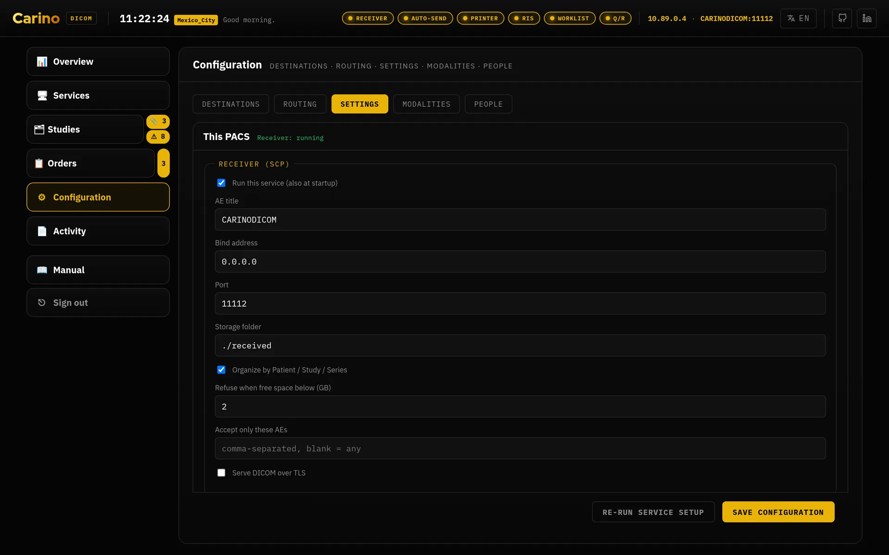
config.json, in a form, grouped by job: open the group you need and leave the rest folded. The file stays the source of truth — an edit here writes it, and a config the dashboard would refuse to save is refused with the reason and the field it is about, not silently rewritten. The groups are collapsible sections — This PACS open here, Sending, Worklist and orders, Printing and the rest folded below it — and Shut down service sits alone in the last one, Danger zone. Re-run service setup and Save configuration are the footer buttons, always in view.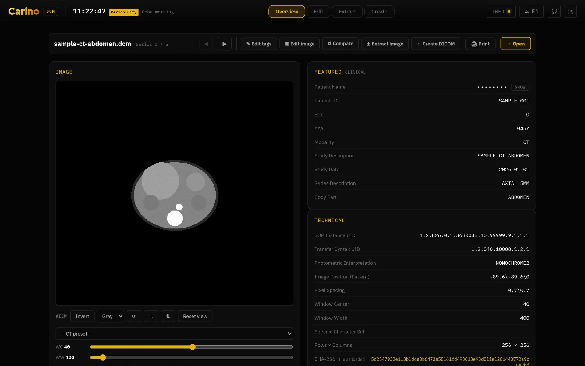
![The editor's Edit tab: a toolbar with Anonymize (PS3.15), Options, Fake patient (test data), undo and redo, + Tag, JSON, CSV, Print, This file and Download all; a strip of the five loaded series; filter chips for patient, study, series, image, equipment, UIDs and private tags; the tag table itself, one row per attribute with its group and element numbers, description, VR and an editable value; and down the right-hand third an Image edits panel — rotate, flip, invert and redact burned-in text, written into the stored pixels — above the frame preview, a folded Window/Level reading and the drop zone.](img/en/editor-tags.webp)
The dev peer — a disposable second archive
Loopback only · pacs serve --dev-peer · never in a shipped build
- What it does
- Creates a whole second archive inside this same process, on
127.0.0.1only, with its own AE title, its own receiver and Query/Retrieve ports and its own storage in a temporary folder — and a destination on this appliance already aimed at it. It is somewhere real for a study to go while you prove that forwarding, a routing rule, de-identify-on-forward or C-MOVE does what you believe it does. A black-hole destination is created beside it, switched off: enable that one and sends fail on purpose, which is how you fill the Stuck tab on demand and find out what being stuck looks like before it happens for real. - How to open one
- Start the engine with
pacs serve --dev-peer— it says so on the line under the dashboard URL — then pick 🧪 Dev peer in the sidebar and press Create peer. The panel then reports its AE title, both ports, its folder and what it has received. Without that flag the row is not there, the API answers 404, and no setting inconfig.jsonwill bring it back. That is deliberate: a setting can be changed by anybody holding the dashboard's token, and a launch argument cannot be reached over HTTP at all. - Who may
- A profile allowed to create and discard the disposable test archive. Among the built-in profiles that means IT, and an administrator — proving where a forward is dying is bench work. Reception and the radiologist do not get it: a second archive is a bench tool, not a clinical one. Creating one and discarding one are both written to the audit trail.
- What becomes of what it stored
- All of it goes — the folder, and both destination rows on this appliance — when you press Discard, when the process stops, and on the next start after a crash or a power cut. Nothing outlives it, which is the entire reason to use this rather than hand-writing a second config and forgetting the folder. One thing to expect: discard a peer with sends still queued against it and those sends have nowhere left to retry, so clear them in Studies → Stuck.
A bench tool, and the flag is what keeps it one. The peer is loopback-only and unconditionally so — a test archive a modality on the network could find would be a second, unaudited store of somebody's images, and nobody would notice it was there. Do not pass the flag on an appliance holding real studies. The desktop and container builds never pass it for you.
7. This is not a medical device
Carino DICOM is not a medical device. It is not certified, cleared or registered with any regulator, in any country. It carries no CE marking as a medical device, no FDA clearance, and no registration with ANVISA, COFEPRIS or any equivalent body. Nobody has run a clinical-use validation against it.
It is not for primary diagnosis. There is no diagnostic viewer here: no windowing, no measurements, no calibrated rendering chain, no control over the display it appears on. Read studies on the validated workstation you already have.
Stated plainly, because that is more useful than a footnote:
- If you deploy it, the validation is yours. Regulatory compliance, risk assessment, data protection and clinical responsibility sit with the organisation that puts it into production, not with the project.
- It is distributed with no warranty of any kind, as its AGPL-3.0 licence says.
- It does not replace your PACS or your RIS. It is the gateway between them, and the thing that keeps a department working through an outage until they come back.
- Treat it as clinical infrastructure anyway. Not being a medical device does not make it harmless: it moves patient data. Volume encryption, firewalling, TLS, a token and backups are not optional.
- If a patient's care depends on it, the responsibility for that is yours, not this software's.
None of this is pessimism. The project takes seriously that an image that silently never arrives is worse than a crash — which is why it would rather refuse to start, count failed sub-operations explicitly, and over-send than under-send. It withholds a delivery in exactly one case, loudly and reversibly: a destination a rule asks to de-identify for, while the scrub that was promised cannot be performed — because the profile is off, or because the profile is on and no de-identifier could be built. It says which of the two, because the two are fixed differently. But software can only answer for what it does; the rest is yours.
8. Licence and where to get help
Carino DICOM is released under AGPL-3.0-or-later. Because it is a network server,
§13 applies: if you run a modified version as a service, you must offer its source to the people
who use it. Keep the LICENSE file and a pointer to the source with any modified
deployment.
- Source and issue tracker on GitHub
- Security policy — what is protected, what is not, and how to report a vulnerability
- How to contribute
Found an error in this manual — or a translation a radiologist would never say? Open an issue. The Spanish, Portuguese, Japanese and Russian manuals are part of the project, not an extra.
Carino DICOM · landing page · part of the carino.systems workshop · AGPL-3.0-or-later.